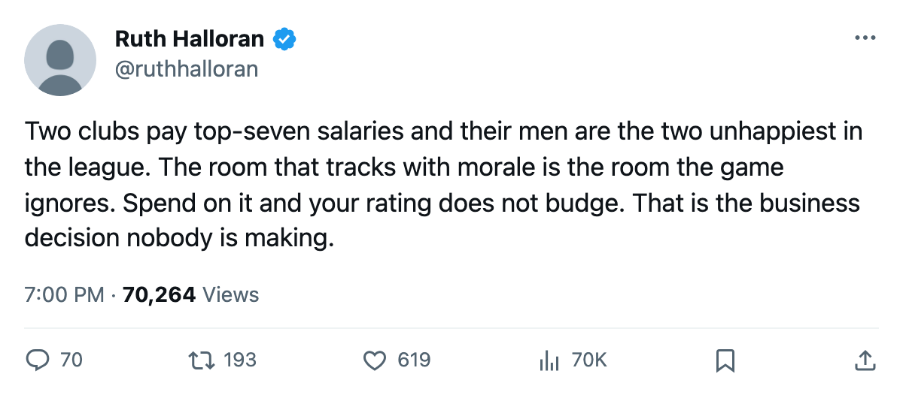
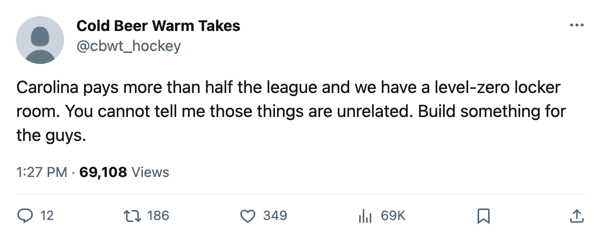

The Unhappy Premium: Two Top-7 Payrolls Bottom the Morale Table, and the Only Room That Tracks With It Reads Nothing
Carolina and Columbus pay like contenders. Their men rank 29th and 30th on the Bureau's morale scale, and the one facility track that follows those numbers does nothing in this build.
 Ruth HalloranBusiness of hockey · The Building
Ruth HalloranBusiness of hockey · The Building
Eric McGaffney runs $63.79M in payroll at  Carolina Hurricanes, the 6th-highest in this league. Brent O'Connor runs $62.03M at
Carolina Hurricanes, the 6th-highest in this league. Brent O'Connor runs $62.03M at  Columbus Blue Jackets, the 7th. The Bureau's Morale Scale has Carolina at 90.9 and Columbus at 90.3. Only
Columbus Blue Jackets, the 7th. The Bureau's Morale Scale has Carolina at 90.9 and Columbus at 90.3. Only  Atlanta Thrashers (90.3) ties the floor.
Atlanta Thrashers (90.3) ties the floor.
Six clubs sit below 92 on the scale. Two of them pay inside the league's top 7 by salary.
The pattern underneath the two big spenders reaches across the sheet. Every club whose locker room sits at level 4, the highest any club has built, occupies a spot in the top 5 on morale.  Vancouver Canucks at 99.5,
Vancouver Canucks at 99.5,  Florida Panthers at 98.5,
Florida Panthers at 98.5,  Tampa Bay Lightning at 98.5,
Tampa Bay Lightning at 98.5,  Los Angeles Kings at 98.4,
Los Angeles Kings at 98.4,  Colorado Avalanche at 97.4. All five carry a level-4 locker room and none carries a live sum better than −13.
Colorado Avalanche at 97.4. All five carry a level-4 locker room and none carries a live sum better than −13.
The 6 clubs below 92 all have a locker room at level 0 or 1. Carolina and Columbus sit at 0.  Minnesota Wild,
Minnesota Wild,  Buffalo Sabres,
Buffalo Sabres,  Edmonton Oilers, and Atlanta Thrashers fill the other four slots. No club above 96 on morale has a locker room below 3, and no club below 92 has one above 1. The exceptions sit at the seams:
Edmonton Oilers, and Atlanta Thrashers fill the other four slots. No club above 96 on morale has a locker room below 3, and no club below 92 has one above 1. The exceptions sit at the seams:  Toronto Maple Leafs runs a level-0 locker room and morale at 92.1, and
Toronto Maple Leafs runs a level-0 locker room and morale at 92.1, and  Boston Bruins has a level 0 at 92.0, one rung above the basement.
Boston Bruins has a level 0 at 92.0, one rung above the basement.
| Club | Morale | Locker room | Live sum | Payroll |
|---|---|---|---|---|
| Vancouver Canucks | 99.5 | 4 | −14 | $46.36M |
| Florida Panthers | 98.5 | 4 | −16 | $57.33M |
| Tampa Bay Lightning | 98.5 | 4 | −13 | $59.89M |
| Los Angeles Kings | 98.4 | 4 | −19 | $50.80M |
| Colorado Avalanche | 97.4 | 4 | −14 | $68.11M |
 St. Louis Blues St. Louis Blues | 96.0 | 3 | −16 | $69.76M |
| Carolina Hurricanes | 90.9 | 0 | −11 | $63.79M |
| Columbus Blue Jackets | 90.3 | 0 | −15 | $62.03M |
The tuning file gives the locker room a curve: level 0 carries a −10 modifier, level 4 carries +0, and the column that would say what rating it moves says morale. The column beside that one says this: in the file, read by nothing. The curve sits in the data and the pipeline does not read it. The morale figures come from somewhere the Building cannot see, and they track the locker room level across all 30 clubs.
The payroll and the room do not line up
For Carolina and Columbus, the spending question is straightforward. Both men sit inside the league's top 7 by salary and both run facility suites the live tracks rate in the bottom third. Carolina's equipment room sits at level 1, worth −4 on agility, acceleration, balance and shot accuracy. Columbus has level 0, worth −6. Both are live-track deficits, not penalties from a dead room, and they show up in the live sum: −11 for Carolina, −15 for Columbus.
The five top clubs have nothing in common except a level-4 locker room and a facility suite that the live tracks read as poor. Colorado Avalanche pays the 4th-highest salary. St. Louis Blues pays the 3rd. Vancouver Canucks pays the 28th and Los Angeles Kings the 25th. Los Angeles runs −19, the worst live sum on the sheet. A club that filled its locker room in the upgrade window filled a room that shows no output in the pipeline.
The record shows allocation. It cannot price an upgrade or explain why a general manager filled one room before another. Stefaan Bullard of  Montreal Canadiens, who runs a level-4 workout room and a level-0 travel budget, said on The Tunnel this week that he built the workout room first "because I needed it first." Travel, he said, is next. "I don't build rooms on the deadline. I build them when I can. The deadline is for the roster. The rooms are something else. One at a time."
Montreal Canadiens, who runs a level-4 workout room and a level-0 travel budget, said on The Tunnel this week that he built the workout room first "because I needed it first." Travel, he said, is next. "I don't build rooms on the deadline. I build them when I can. The deadline is for the roster. The rooms are something else. One at a time."
Montreal's payroll is $54.89M, 20th in the league, with $17.76M of profit on the bottom line. Bullard is building the rooms the game credits: workout first, travel second. The locker room sits at level 1 on his sheet and the men sit at 92.1, just above the line.
A GM sees the correlation and gets no credit for it
The question the record cannot answer is whether a club can buy morale at all. The locker room level and the morale average move together across 30 clubs, the file has a curve that runs from −10 to +10, and the pipeline reads nothing. A general manager who looks at that table sees the single strongest room-by-output correlation on the sheet. Spending on it would cost money the record does not price and earn the club no measurable change in anything the Building can print.
The 6 clubs below 92 all play in rooms the live tracks rate at −11 or worse. Two of them pay top-7 salaries. The men on the payroll know what they are paid. The record cannot say what else they know.

